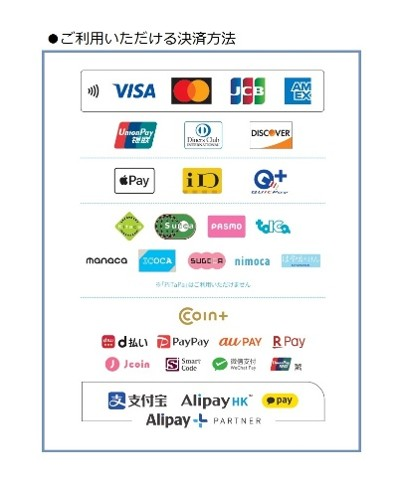

ACCESS
店舗情報・アクセス

HOURS
営業時間
| 時間 | 月 | 火 | 水 | 木 | 金 | 土 | 日祝 |
|---|---|---|---|---|---|---|---|
| 9:00〜13:00 | ● | ● | ● | ● | ● | ● | − |
| 13:00〜18:00 | ● | ● | ● | ● | ● | − | − |
- 昼休みなしで営業しています（平日 9:00〜18:00）
- 休業日：日曜・祝日、お盆（8/13〜8/15）、年末年始（12/30〜1/3）
- 営業時間外（18:00〜翌9:00）も、お電話またはLINEで可能な範囲で対応いたします。
夜間・休日のご連絡先：090-7989-5230
ACCESS
アクセス
- 住所
- 〒813-0014
福岡県福岡市東区香椎台1-6-8-101 - 電話
- 092-683-0747（FAX共通）
- 駐車場
- 無料3台（近隣に2台あり）
- バス
- 西鉄バス「香椎台1丁目」バス停から徒歩1分
- 電車
- JR香椎線「香椎神宮駅」から徒歩約8分
JR香椎線「舞松原駅」から徒歩約14分
INFORMATION
薬局のご案内
- 薬剤師
- 常勤2名・非常勤4名
- 取扱医薬品
- 医療用医薬品 約1,350品目／一般用医薬品 約60品目
健康食品・介護用品も取り扱っています - 調剤への対応
- 一包化、無菌製剤、麻薬調剤、漢方（煎じ薬）、薬局製剤
- 在宅医療
- ご自宅・施設への訪問による服薬管理・指導を行っています
- 保険証・処方箋
- マイナ保険証、電子処方箋に対応
- ご相談方法
- 店頭（個室カウンターあり）、電話、メール、SMS、LINE
LINEによるオンライン服薬指導にも対応しています - お支払い方法
- 現金のほか、以下の決済方法をご利用いただけます。

オンライン服薬指導のお支払いはPayPayをご利用いただけます（詳しくはこちら） - バリアフリー
- 車椅子でご利用いただけます（スロープ・手すり・多目的トイレ・車椅子対応駐車場あり）
筆談・画面表示など、耳の不自由な方への対応も行っています - その他
- お薬の配送（ゆうパック・送料はご負担）、緊急避妊薬のご相談、新型コロナ抗原検査キットの販売
- 運営
- 有限会社 ちはらファーマシー（管理薬剤師：小西 秀平）